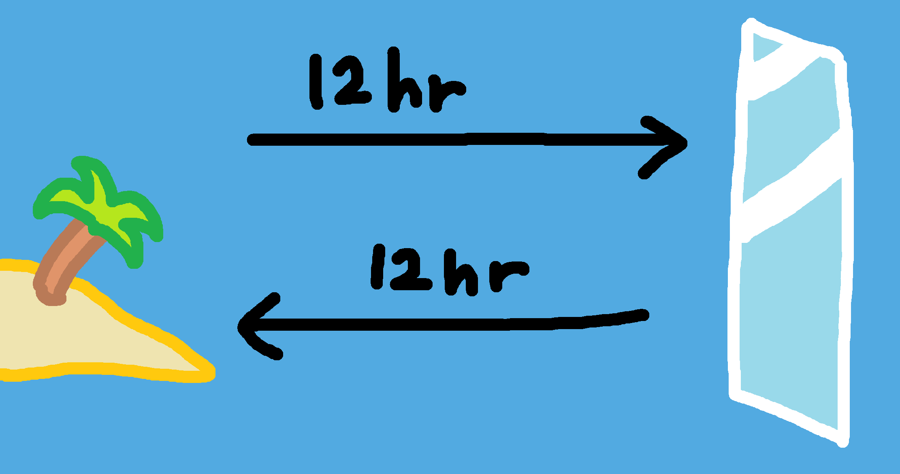

During the founding of Singletown, one of the explorers in the group, Dubius Dublius, was the first to notice an identical island to the west.
Being the epic prankster that he was, Dubius knew that he had to take advantage of the situation. With convincing entusiam, he said:
"Everybody look! There's a giant mirror in the middle of the ocean! You can see the reflection of this island in it!""
One guy questioned him:
"Why cant we see ourselves in it?"
Dubius Dublius didnt need any skeptiks.
He explained to the rest of the group why the mirror was so special.
"The mirror is so big that it can only reflect big things, like islands or buildings! Its also a little slow, so it;s delayed by like a day, because its so far away!"
To keep the "mirror" up to date, he traveled to the other island that night and built a house to match the one built on Singletown.
Ever since that night, he he's been going back every night to keep the prank going.
He named the new island Doubletown, and nobody ever suspected a thing.